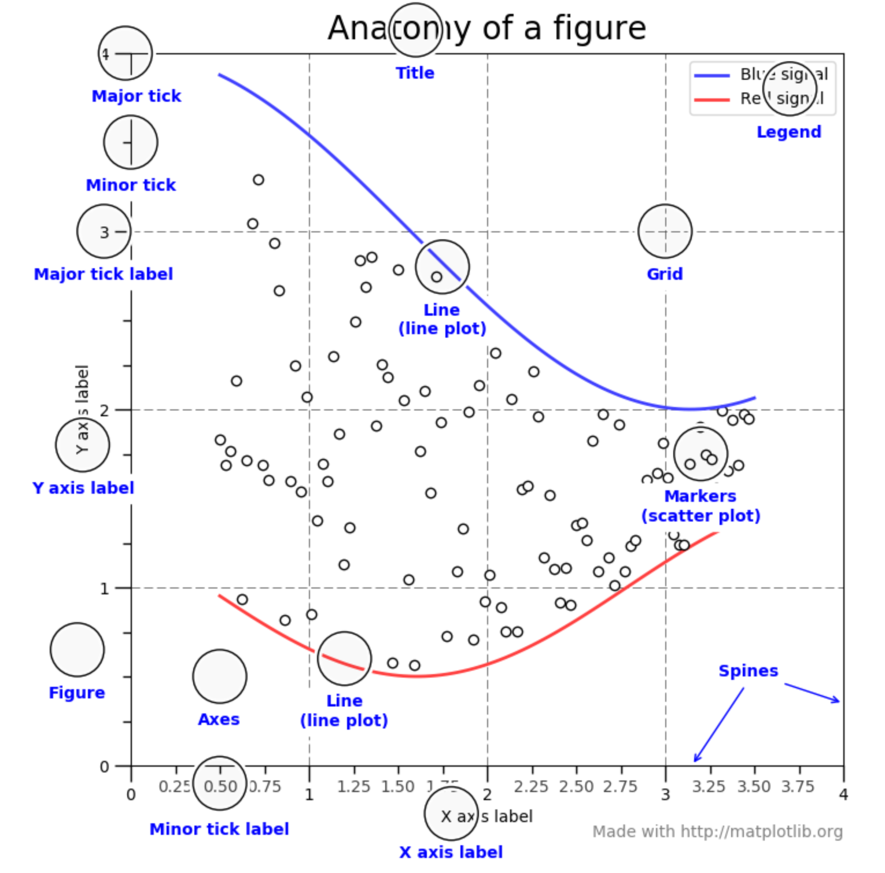

CSS 2: lecture 3 - Matplotlib¶
pset 1 notes¶
absolute paths!
'/home/evul/pset-1/'
'.'
'.'
missing manual answers!
I was super lenient.
problem I created: ‘timestamp.txt’ exists in the test environment… manually graded to remedy the problem, sorry about that.
common logical problem: building the list of unique characters iteratively.
another problem I created: should have had better test sets for unique characters, this common bug in your code got through tests
Why make plots?¶
data analysis stats and ends with plots
fastest way to figure out what is going on in your data
most effective way to communicate what you did
What we are covering today¶
mechanics of making plots with matplotlib
a bit of guidance about which plots to make, in what circumstances.
backwards reasoning about how to make a plot based on what readers want
Matplotlib¶
https://matplotlib.org/stable/tutorials/index.html

basics¶
fig, ax = plt.subplots()
import matplotlib.pyplot as plt
fig, ax = plt.subplots()
tmp = ax.plot([1, 2, 3, 4], [1, 3, 2, 4])
tmp = ax.set_ylabel('this is the y axis')
tmp = ax.set_xlabel('this is the x axis')
tmp = ax.set_title('This is our plot')
fig.savefig('temporary_figure.png')
Figure
Axes,
Axis
Artist
https://matplotlib.org/stable/tutorials/introductory/pyplot.html
pyplot vs object oriented plotting. For subplot versatility, we need to be object oriented.
order of operations:¶
create figure and subplots / axes you want.
add plotting elements to axes as needed.
tweak formatting and style.
Simple plot types¶
https://matplotlib.org/stable/api/axes_api.html
fig, ax = plt.subplots()
tmp = ax.plot([1, 2, 3, 4], [1, 3, 2, 4], 'bs-')
tmp = ax.plot([1, 2, 3, 4], [1.5, 3.5, 2.5, 4.5], 'ro-')
tmp = ax.plot([1, 2, 3, 4], [1.25, 3.25, 2.25, 4.25], 'g.-')
tmp = ax.set_ylabel('this is the y axis')
tmp = ax.set_xlabel('this is the x axis')
tmp = ax.set_title('This is our plot')
ax.scatter (points) https://matplotlib.org/stable/api/_as_gen/matplotlib.axes.Axes.scatter.html#matplotlib.axes.Axes.scatter
fig, ax = plt.subplots()
tmp = ax.scatter([1, 2, 3, 4],
[1, 3, 2, 4],
color=['r', 'b', 'g', 'k'],
s = [15, 30, 45, 75])
tmp = ax.set_ylabel('this is the y axis')
tmp = ax.set_xlabel('this is the x axis')
tmp = ax.set_title('This is our plot')
fig, ax = plt.subplots()
tmp = ax.bar(x = ['cat', 'dog', 'squirrel', 'mouse'],
height = [1, 3, 2, 4],
color=['r', 'b', 'g', 'k'])
tmp = ax.set_ylabel('this is the y axis')
tmp = ax.set_xlabel('this is the x axis')
tmp = ax.set_title('This is our plot')
ax.hist https://matplotlib.org/stable/api/_as_gen/matplotlib.axes.Axes.hist.html#matplotlib.axes.Axes.hist
from collections import Counter
x = [1, 2, 3, 4, 3, 5, 4, 3, 2, 4, 5, 3, 2, 3, 4, 3, 3, 2, 1, 6, 5, 7, 8, 9]
print(Counter(x))
fig, ax = plt.subplots()
tmp = ax.hist(x, color='g')
tmp = ax.set_ylabel('the frequency of the bin of x')
tmp = ax.set_xlabel('this is the x value')
tmp = ax.set_title('This is a histogram')
Counter({3: 7, 2: 4, 4: 4, 5: 3, 1: 2, 6: 1, 7: 1, 8: 1, 9: 1})
changing colors¶
https://matplotlib.org/stable/tutorials/colors/colors.html
import pandas as pd
df = pd.DataFrame({'type': ['dog', 'cat', 'dog', 'cat', 'dog', 'fish', 'fish', 'fish'],
'mass': [30, 10, 40, 8, 20, 3, 5, 2],
'cuteness': [ 5, 4, 4.5, 3.5, 3, 1, 1.5, 2.5],
'name':['rover', 'whiskers', 'growler', 'meow', 'lambda', 'bubbles', 'pout', 'goldy']})
color_map = {'dog': 'maroon',
'cat': 'teal',
'fish': 'orange'}
fig, ax = plt.subplots()
ax.scatter(x = df['mass'],
y=df['cuteness'],
color = df['type'].map(color_map))
<matplotlib.collections.PathCollection at 0x7ff9117ec7f0>
color_map[df['type'].iloc[0]] # doing this for each entry
df['type'].map(color_map)
0 maroon
1 teal
2 maroon
3 teal
4 maroon
5 orange
6 orange
7 orange
Name: type, dtype: object
adding text¶
https://matplotlib.org/stable/tutorials/text/text_intro.html
color_map = {'dog': 'maroon',
'cat': 'teal',
'fish': 'orange'}
fig, ax = plt.subplots()
ax.scatter(x = df['mass'],
y=df['cuteness'],
color = df['type'].map(color_map))
ax.text(20,1, 'hello\nthere\nthis\nin\nspread\nmultiple\nlines')
for location in range(df.shape[0]):
ax.text(df['mass'].iloc[location],
df['cuteness'].iloc[location],
df['name'].iloc[location],
color = df['type'].map(color_map).iloc[location])
ax.set_xlabel('pet mass')
ax.set_ylabel('pet cuteness')
ax.set_title('My pet scatterplot')
Text(0.5, 1.0, 'My pet scatterplot')
things to change in axis¶
https://matplotlib.org/stable/api/axes_api.html#the-axes-class
set_xlabel, set_ylabel, set_title
rotating labels:
fig, ax = plt.subplots()
tmp = ax.bar(x = ['cat', 'dog', 'squirrel', 'mouse'],
height = [1, 3, 2, 4],
color=['r', 'b', 'g', 'k'])
tmp = ax.set_ylabel('this is the y axis')
tmp = ax.set_xlabel('this is the x axis')
tmp = ax.set_title('This is our plot')
tmp = ax.tick_params(axis = 'x', labelrotation = 90)
things to do to the figure¶
https://matplotlib.org/stable/api/figure_api.html#matplotlib.figure.Figure
savefig, tight_layout, size
fig, ax = plt.subplots(figsize = (8, 8))
ax.scatter(x = df['mass'],
y=df['cuteness'],
color = df['type'].map(color_map))
ax.text(20,1, 'hello\nthere\nthis\nin\nspread\nmultiple\nlines')
for location in range(df.shape[0]):
ax.text(df['mass'].iloc[location],
df['cuteness'].iloc[location],
df['name'].iloc[location],
color = df['type'].map(color_map).iloc[location])
ax.set_xlabel('pet mass')
ax.set_ylabel('pet cuteness')
ax.set_title('My pet scatterplot')
fig.savefig('pet-plot.png')
subplots¶
fig, axs = plt.subplots(2, 4, figsize = (10, 4))
fig.tight_layout()
axs[0,0].plot([1, 2, 3, 4], [1, 3, 2, 4], 'rs-')
axs[0,1].bar(x = ['cat', 'dog', 'squirrel', 'mouse'],
height = [1, 3, 2, 4],
color=['r', 'b', 'g', 'k'])
axs[1,2].scatter(x = df['mass'],
y=df['cuteness'],
color = df['type'].map(color_map))
axs[0,3].set_title('This is an empty plot')
axs[1,3].set_xlabel('some x label')
Text(0.5, 15.000000000000028, 'some x label')
fig, ax = plt.subplots(figsize = (8, 8))
ax.scatter(x = df['mass'],
y=df['cuteness'],
color = df['type'].map(color_map))
for location in range(df.shape[0]):
ax.text(df['mass'].iloc[location],
df['cuteness'].iloc[location],
df['name'].iloc[location],
color = df['type'].map(color_map).iloc[location])
ax.set_xlabel('pet mass')
ax.set_ylabel('pet cuteness')
ax.set_title('My pet scatterplot')
Text(0.5, 1.0, 'My pet scatterplot')
fig, axs = plt.subplots(1, 3, figsize = (10, 3))
dogs = df[df['type']=='dog']
axs[0].scatter(x = dogs['mass'],
y=dogs['cuteness'],
color = dogs['type'].map(color_map))
for location in range(dogs.shape[0]):
axs[0].text(dogs['mass'].iloc[location],
dogs['cuteness'].iloc[location],
dogs['name'].iloc[location],
color = dogs['type'].map(color_map).iloc[location])
axs[0].set_xlabel('pet mass')
axs[0].set_ylabel('pet cuteness')
axs[0].set_title('Dogs')
cats = df[df['type']=='cat']
axs[1].scatter(x = cats['mass'],
y=cats['cuteness'],
color = cats['type'].map(color_map))
for location in range(cats.shape[0]):
axs[1].text(cats['mass'].iloc[location],
cats['cuteness'].iloc[location],
cats['name'].iloc[location],
color = cats['type'].map(color_map).iloc[location])
axs[1].set_xlabel('pet mass')
axs[1].set_ylabel('pet cuteness')
axs[1].set_title('Cats')
fish = df[df['type']=='fish']
axs[2].scatter(x = fish['mass'],
y=fish['cuteness'],
color = fish['type'].map(color_map))
for location in range(cats.shape[0]):
axs[2].text(fish['mass'].iloc[location],
fish['cuteness'].iloc[location],
fish['name'].iloc[location],
color = fish['type'].map(color_map).iloc[location])
axs[2].set_xlabel('pet mass')
axs[2].set_ylabel('pet cuteness')
axs[2].set_title('Fish')
fig.tight_layout()
fig, axs = plt.subplots(1, 3, figsize = (10, 3))
# pick an index
for axis_index, pet_type in enumerate(['dog', 'cat', 'fish']):
print(axis_index, pet_type)
tmp = df[df['type']==pet_type]
axs[axis_index].scatter(x = tmp['mass'],
y=tmp['cuteness'],
color = tmp['type'].map(color_map))
for location in range(tmp.shape[0]):
axs[axis_index].text(tmp['mass'].iloc[location],
tmp['cuteness'].iloc[location],
tmp['name'].iloc[location],
color = tmp['type'].map(color_map).iloc[location])
axs[axis_index].set_xlabel('pet mass')
axs[axis_index].set_ylabel('pet cuteness')
axs[axis_index].set_title(pet_type)
fig.tight_layout()
0 dog
1 cat
2 fish
# create a figure, with subplots.
fig, axs = plt.subplots(1, 3, figsize = (10, 3))
# start with the 0th axis and increment up
axis_index = 0
# loop over all groups grouped by pet type.
# on each iteration, type gets assigned to grp_name
# and a dataframe just for that group, gets assigned to grp_df
for grp_name, grp_df in df.groupby('type'):
# plot points
axs[axis_index].scatter(x = grp_df['mass'],
y=grp_df['cuteness'],
color = grp_df['type'].map(color_map))
# draw all the labels
for location in range(grp_df.shape[0]):
axs[axis_index].text(grp_df['mass'].iloc[location],
grp_df['cuteness'].iloc[location],
grp_df['name'].iloc[location],
color = grp_df['type'].map(color_map).iloc[location])
# tweak axis details
axs[axis_index].set_xlabel('pet mass')
axs[axis_index].set_ylabel('pet cuteness')
axs[axis_index].set_title(pet_type)
# increement our axes index
axis_index += 1
# changing subplot spacing to look nicer.
fig.tight_layout()